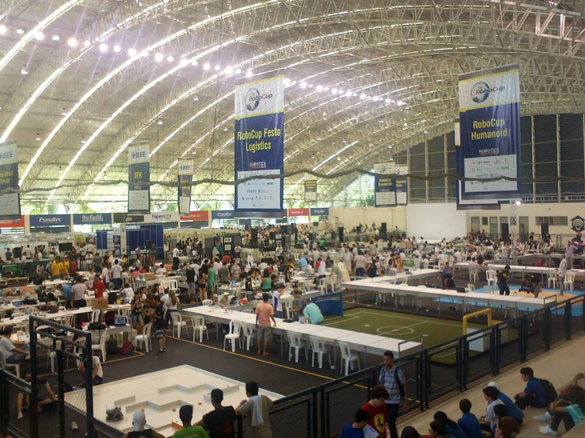
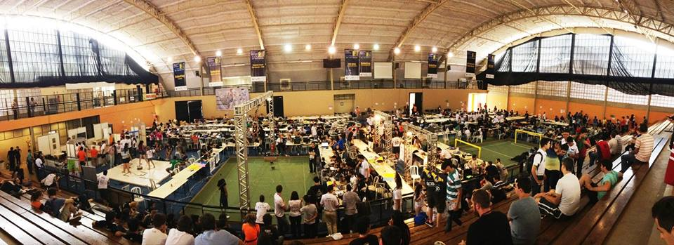

Competição Brasileira de Robótica

A competição brasileira de robótica (CBR), na foto em sua realização em Fortaleza - CE (2013), é uma das competições referentes a Competição Mundial de Robótica (RoboCup), nela alunos de graduação e pós-graduação se empenham para construir robôs afim de participar das categorias existentes e desenvolver pesquisa nas áreas de robótica e inteligência computacional e artificial, realizada desde 2003, a competição já passou pelas localidades: Bauru - SP, Salvador - BA, São Luis - MA, Campo Grande - MS, Florianópolis - SC, Salvador - BA, Brasília - DF, São Bernardo do Campo - SP, São João del-Rei - MG, Fortaleza - CE, São Carlos - SP e Uberlândia - MG.
O evento abriga as seguintes competições: RoboCup Small Size Soccer (F-180), RoboCup 2D Soccer Simulation, RoboCup 3D Soccer Simulation, RoboCup Humanoid and Standard Plataform League (SPL), RoboCup Rescue Simulation Agents, RoboCup @Home, RoboCup Junior, RoboCup Festo Logistics, IEEE Standard Educational Kits (SEK), IEEE Open, IEEE Very Small Size Soccer (VSS) e IEEE Humanoid Robot Racing. Site oficial.
Competição Latino-Americana de Robótica

A competição latino-americana de robótica (LARC), na foto em sua realização em São Carlos - SP (2014), é uma das